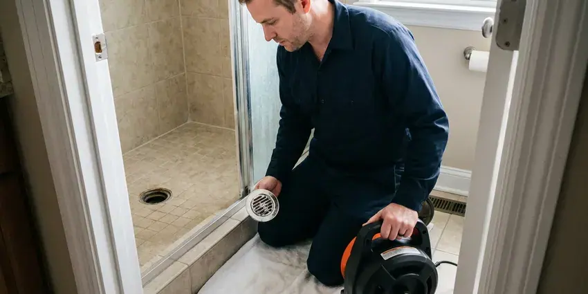

Sewer Cleaning in Ames, IA
For trusted sewer cleaning in Ames, IA, count on KFR Plumbing. We handle everything from minor clogs to major blockages in your main sewer line.
- Experienced Plumbers
- Licensed and Insured Crew
- Satisfaction Guaranteed
- Prompt, Effective Service

Get Your Sewer Lines Cleared in Ames, IA.
We stop the backup first, then show you what caused it and how to prevent the next one.
Professional Sewer Cleaning Services in Ames, IA
KFR Plumbing cleans main sewer lines from the house to the city tap or septic tank. We use heavy sectional cables with root saws and, when the line needs it, high-pressure water jetting to scour the pipe clean.
Our expertise includes:
- Removing grease and sludge buildup.
- Hydro jetting to scour grease and scale from main lines
- Restoring full flow to main sewer lines.

Additional Drain Services Services in Ames, IA
From stubborn kitchen clogs to main sewer backups, our drain services in Ames, IA clear the line and keep it clear with camera-verified results.


Drain Cleaning near Ames


Customers
Why Choose KFR Plumbing for Sewer Cleaning in Ames, IA?
We do not guess about your sewer. Every main line cleaning can include a recorded camera inspection so you know whether a cleaning solved it or a repair is needed.
- Lasting Solutions, Our goal is not just to clear a clog, but to provide solutions that prevent its return, saving you time and money in the long run.
- Camera Verified, We record the line after cleaning so you can see it is open and catch any damage.
- Advanced Equipment, We rely on modern diagnostic cameras and high-pressure hydro jetting tools for accurate and effective cleaning.
Citywide Coverage
We clean sewers in every neighborhood of Ames, including older districts with clay and cast iron and newer tracts with PVC. Our crews know where cleanouts are usually placed in local homes and can find them quickly.
Experienced Team
Our sewer techs run main line machines daily and can feel the difference between roots, grease and a collapsed section through the cable. That experience means less guessing and less frequent repeat visits.
Safety-First Approach
We follow local plumbing code for cleanouts and any sewer repair. If your line needs work beyond cleaning, we pull the required permits and schedule inspections.
Trusted Certified Ames Plumbing Services Professionals
At KFR Plumbing, we take pride in providing licensed, certified plumbing services throughout Ames, IA. Backed by recognized industry credentials, our experienced plumbers combine technical skill with genuine customer care. Whether it is repair, installation, or maintenance, we follow strict safety and quality standards to deliver lasting results you can trust.
Call Us Now PHCC Plumbing Contractor Recognition
PHCC Plumbing Contractor Recognition Better Business Bureau (BBB) Accreditation
Better Business Bureau (BBB) Accreditation Angi Certified Pro
Angi Certified Pro ISO 9001 Quality Management Certification
ISO 9001 Quality Management CertificationDependable Sewer Cleaning Services in Ames, IA
Main Sewer Line Clearing in Ames
The main sewer line is essential for carrying wastewater away from your home. Blockages in this line can cause widespread backups affecting all fixtures. We use powerful augers and dedicated cutting tools to clear roots, grease, and other debris that commonly obstruct main sewer lines, especially in older homes around Ames.

Grease and Scale Buildup Cleaning in Ames, IA
Grease from kitchens cools and coats the inside of sewer pipes, and minerals in the water bond with it to form a tough crust. Water softeners are a standard upgrade in Iowa homes, helping protect tank water heaters, faucets, and appliances from mineral damage. Over years the pipe opening shrinks until flow slows to a trickle. A cable can punch a hole through, but jetting cleans the walls back to full size. We choose the method based on pipe material and condition. Cleaning before the line fully closes spares you money and stress.
Sewer Cleanout Installation in Ames
Some homes have no accessible cleanout, which forces techs to pull a toilet or go through a roof vent. We can install a two-way cleanout near the foundation so the line can be cleaned from either direction. This makes every future cleaning quicker and cheaper. It also gives a clear access point for camera inspections. Cleanout installation is done to local code with any required permit.
Residential Sewer Cleaning in Ames
Our residential sewer cleaning addresses common issues like grease buildup, food debris, and hair that accumulate in household drain lines and eventually affect the main sewer. We use specialized augers and small-diameter hydro jetters to clear these blockages effectively. For homes in Ames, particularly older ones, preventative cleaning can save you from messy backups and costly repairs. We make sure your home's wastewater flows smoothly to the municipal sewer system.
Cast Iron Sewer Cleaning in Ames, IA
Many older homes have cast iron drains under the slab or floor. Newer construction mostly uses PEX and plastic drains, while older homes often have a patchwork of materials from past repairs. Over time the inside of cast iron corrodes, scales and develops a channel along the bottom. Aggressive cutters can break thin spots, so we use descaling chains and careful jetting suited to older iron. This restores flow and gives a clear view on camera of the remaining wall. It also helps you decide if lining is a good option.
Tree Root Removal from Sewer Lines in Ames
Tree roots are a common cause of sewer line blockages in many Iowa communities, especially where mature trees are present. Our team uses dedicated root cutting tools attached to our augers to sever and remove intruding roots. We can also perform camera inspections to gauge the extent of root damage and recommend preventative measures in Ames.
Sewer Cleaning Versus Sewer Repair in Ames, IA
Cleaning removes what is in the pipe, but it cannot fix a crack, a belly or a collapsed section. If your sewer backs up every few months, the camera will often show why. We compare the yearly cost of maintenance cleanings to a spot repair, lining or replacement. Sometimes regular cleaning is the sensible move for a few years. Other times a repair now saves more over time, and we show you the math.

Root Removal From Sewer Lines in Ames
Trees and shrubs send roots toward any moisture they can find, and a sewer joint is a steady source during dry months. Thirsty yard trees and shrubs are common culprits in local yards. We use a sectional cable with a root saw sized to the pipe to cut the mass free and pull it out. Heavy root growth may need a follow-up with a jetter to clear fine root hairs. A camera inspection then shows where roots are entering so you can decide on lining or repair.
Sewer Cleaning Near Me in Ames, IA
Our team of licensed plumbers is always ready to provide fast, reliable sewer cleaning across Ames. We pride ourselves on being the local solution for any sewer blockage, so help is always just a call away for residents and businesses in Iowa.
Our dedication to the Ames community means we are always ready to respond to your sewer cleaning needs. We pride ourselves on being accessible and delivering prompt, professional service right to your doorstep.
KFR Plumbing at a Glance
- Fully licensed plumbing team covering Ames, IA
- Same-day appointments and 24/7 emergency response
- Upfront, flat-rate pricing before work begins
- 4.8-star rated by 620+ Iowa customers
Ames Map
Ames Information
- Population
- 65,686
- Area codes
- 515/641/712
- Service area
- Ames and communities within 40 miles
- Nearby
- Ankeny, Urbandale, Des Moines, Waukee
Tree root intrusion is a significant concern for sewer lines in Ames, IA, making regular and professional sewer cleaning key for home maintenance. Iowa has long, cold winters and hot, humid summers, and those extremes put constant stress on pipes, water heaters, and sump pumps.
Expert Services
Trust our professionals for reliable KFR Plumbing solutions in Ames, IA.
Our Specialized Plumbing Services in Ames, IA
At KFR Plumbing, we provide a complete range of plumbing services across Ames, IA. From leak detection to full system installations, our team ensures fast, precise, and affordable service for both residential and commercial properties. Explore our core services below:


How Our Sewer Cleaning Process Works in Ames, IA
We follow a clear, systematic approach to make sure your sewer line is thoroughly cleaned and fully functional.
Request a Quote
Contact KFR Plumbing at (515) 308-3583 to describe your sewer issue and schedule an appointment. We collect initial information to understand your needs.
On-Site Diagnosis
Our experienced plumbers arrive at your Ames property, assess the situation, and often use a sewer camera to pinpoint the exact location and cause of the blockage.
Expert Cleaning
Based on the diagnosis, we apply the most effective cleaning method, such as snaking or hydro jetting, to thoroughly clear your sewer line and bring back proper flow.
Frequently Asked Questions About Sewer Cleaning in Ames
The cost of sewer cleaning in Ames, IA can range from $200 for a minor clog cleared with a snake to $600 or more for complex hydro jetting or root removal. Factors like the severity of the blockage, the method required, and the accessibility of the sewer line all affect the final price. We provide upfront pricing before any work starts.
For standard sewer cleaning, such as snaking or hydro jetting to clear a blockage, a permit is usually not required in Ames. However, if the cleaning uncovers a need for major sewer line repair or replacement, then permits from the local building department would be necessary. We take care of all necessary permits for larger jobs.
If our cleaning or camera inspection shows damage like cracks, collapses, or severe root intrusion that cleaning alone cannot resolve, KFR Plumbing will give you a detailed assessment and options for sewer line repair or replacement. We can explain trenchless repair methods, if they apply, to minimize disruption to your Ames property.
Common signs include multiple slow drains throughout your home, gurgling noises from toilets or drains, foul odors coming from drains, and sewage backing up into sinks, tubs, or toilets. If you notice any of these, it is time to call a professional.
Usually, standard home insurance policies do not cover routine sewer cleaning or damage from gradual wear and tear. However, if a sudden, unexpected event causes sewer damage, it might be covered. It is best to check with your insurance provider first.
Drain cleaning typically refers to clearing clogs in smaller branch lines leading from individual fixtures, like sinks or tubs. Sewer cleaning, on the other hand, addresses blockages in the main sewer line that collects wastewater from all household drains and carries it to the municipal system. Sewer clogs affect all drains, while drain clogs are usually isolated.
Most standard sewer cleaning jobs can be done within 1 to 3 hours. However, more severe blockages, such as those caused by extensive tree roots or significant pipe damage, may require more time and possibly additional services.
For most homes in Ames, an annual or twice-yearly sewer cleaning is enough for preventative maintenance, especially if you have older pipes or mature trees nearby. If you have frequent clogs, more regular cleaning might be necessary. Your plumber can suggest a schedule based on your situation.
What People Are Saying About Our Plumbing Experts?

Mark T.
When our office needed drain cleaning, KFR Plumbing provided quick, reliable service. The plumber arrived on time and made sure every drain flowed perfectly before leaving. Very satisfied.
Drain Cleaning · Des Moines, IA
Robert G.
The trenchless sewer replacement saved our front yard. They walked us through the camera inspection footage first so we knew exactly what we were paying for.
Sewer Line Replacement · Waukee, IA
Emily R.
I called KFR Plumbing for plumbing repair, and the technician was fast, polite, and thorough. They explained the problem clearly and fixed it the same day. I will definitely hire them again. Highly recommended!
Plumbing Repair · Urbandale, IAJames P.
Our commercial plumbing system had a leak under the sink, and KFR Plumbing handled it professionally. The plumbers arrived quickly and restored everything without disruption to our customers.
Commercial Plumbing · Urbandale, IA
Daniel K.
A pipe burst at 11 pm and they actually answered. The plumber showed up within the hour, shut everything down, and had us back to normal the next morning. Could not ask for more.
Emergency Plumbing · West Des Moines, IA
Laura S.
I scheduled a water heater replacement, and the team made the process smooth and affordable. The new unit works perfectly, and they cleaned up after completing the job.
Water Heater Replacement · Des Moines, IA